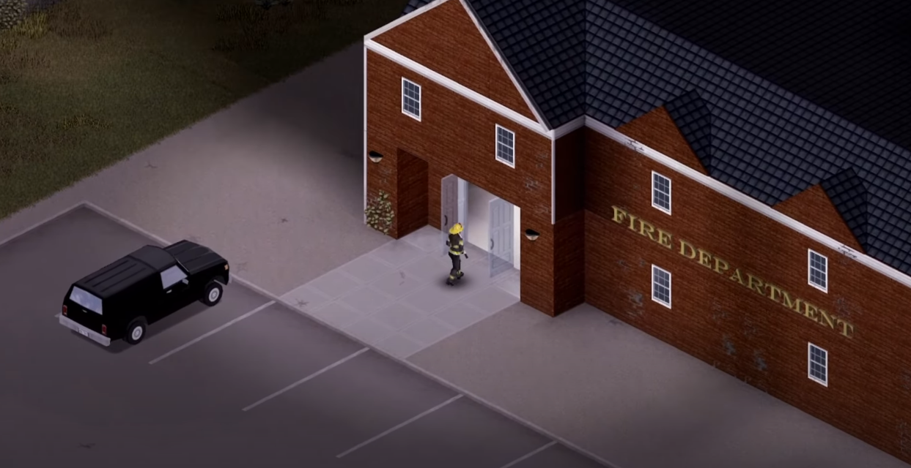
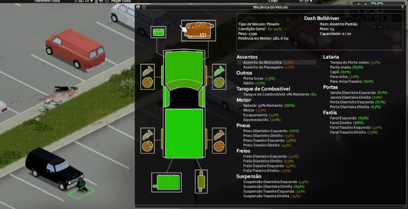
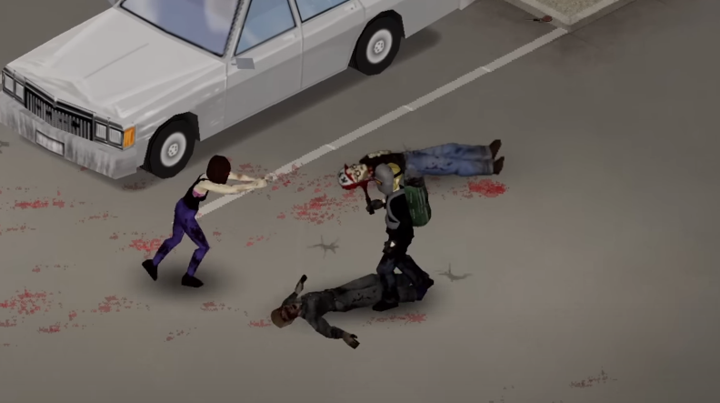
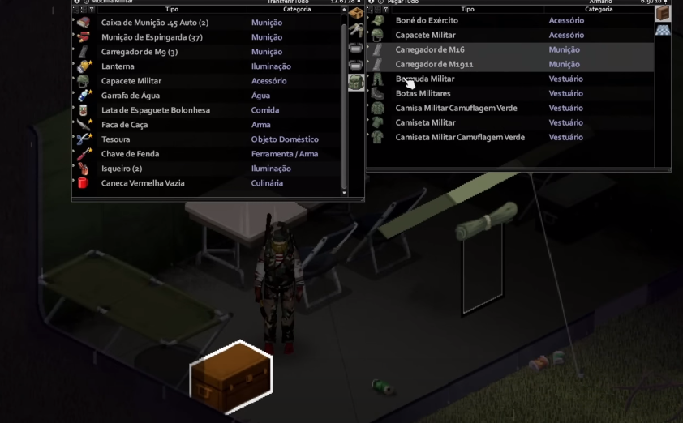
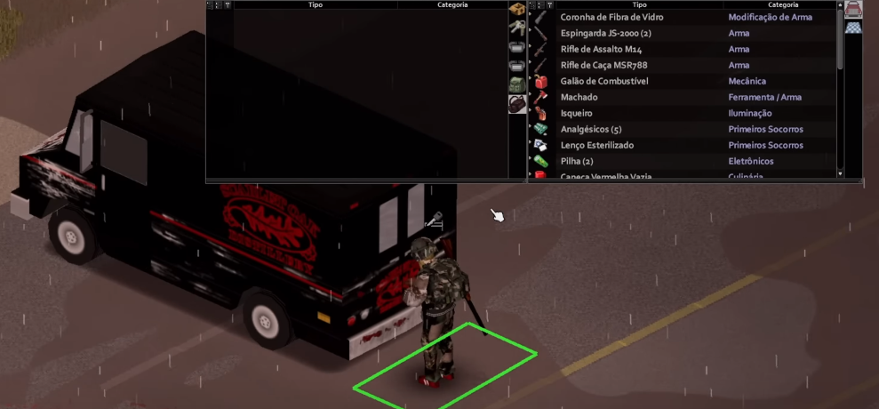

Como Lootear?
Project Zomboid é um jogo de sobrevivência de zumbis em um mundo aberto, onde o objetivo é manter-se vivo o máximo possível. Para isso, é preciso lootear recursos como comida, água, armas, medicamentos e outros itens úteis.
- Escolha uma área que tenha muitos recursos úteis, como comida, água, armas, medicamentos, ferramentas e materiais de construção. Algumas áreas recomendadas são o supermercado, o hospital, a delegacia, a loja de ferragens e a escola 
- Prepare um veículo com alta capacidade de armazenamento. Você pode encontrar carros nas ruas ou nos estacionamentos, mas tome cuidado com os alarmes que podem atrair zumbis. Você também pode usar um reboque ou uma mochila grande para carregar mais itens. 
- Limpe todos os inimigos na área antes de lootear. Você pode usar armas brancas ou de fogo, mas lembre-se que elas fazem barulho e podem chamar a atenção dos mortos-vivos. Você também pode usar armadilhas, iscas ou distrações para evitar o confronto direto. 
- Abra todas as portas, janelas, armários, gavetas e contêineres que encontrar. Você pode usar chaves, pé-de-cabra ou arrombar as fechaduras. Você também pode quebrar as janelas com um objeto pesado, mas isso pode causar ferimentos e sangramento. Procure por itens que sejam úteis para a sua sobrevivência. Alguns exemplos são: comida enlatada, água engarrafada, abridor de latas, garrafa térmica, faca, martelo, chave inglesa, machado, arma de fogo, munição, bandagens, antibióticos, analgésicos, álcool, desinfetante, fósforos, isqueiro, lençóis, roupas, sacos de dormir, livros, mapas e rádios. 
- Carregue os itens que você encontrou no seu veículo ou na sua mochila. Não se esqueça de deixar um espaço livre para poder se movimentar com facilidade. Você também pode organizar os itens por categorias ou prioridades para facilitar a sua busca depois. 
Para a sua sobrevivência, você precisa explorar o ambiente e coletar recursos úteis, como armas, comida, medicamentos e ferramentas. Esse processo de coleta é chamado de lootear.